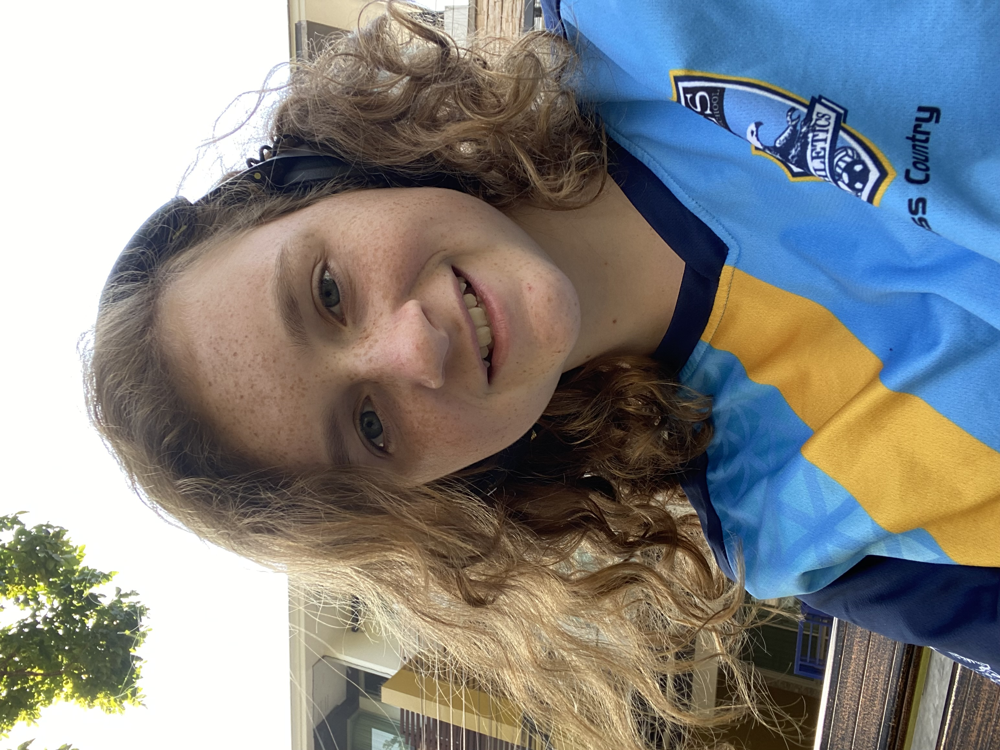

About Me!

Hey what's good? My name is Mackenzie and this is just a little about me.
I love Spotify, football (either one), writing, chatting with my friends (in person or online) and playing video games.
I, Mackenzie Sullivan, am a person of many things. Sometimes it is a good thing, and other times it is not as good. I love school, and the aspect of getting knowledge. I also love football, writing, running, and violin. There are many other things that I love, but those are some of the main things. I have lived in Littleton Colorado for most of my life thus far, though I was born in Albany, New York. I am the oldest of six kids (I have a family of eight people). Their names are Wyatt, Alannah, Loralei, Delaney, and Cassidy from oldest to youngest respectively. Moving here was the first time that us kids had ever been out of the country, so it was all a new experience. When we lived in Colorado, we attended a public school named Dennison Elementary. There I did fifth grade under a very influential teacher in my life, and I still have some letters from her now. Shortly after we moved, not only physically, but also emotionally by coming to Thailand. The emotions were hard to come through, but I’m glad that we are here. In the end, I have been inspired by many people throughout my life, lived through a couple things, and made great friends along the way.
As mentioned before, I love writing. This can be about many things, including writing about some of the challenges I have faced along the way. Some artists I love include for King and Country, Kyle Hume, Matthew West, Tobymac, Building 429, and Sidewalk Prophets. I love to recommend songs to people, so if you are in need of a song recommendation, just ask! However, I think my favorite thing to do is talk to my friends. (If you're my friend, you definetly know this about me.) Thanks for reading my paragraphs.
Back Home